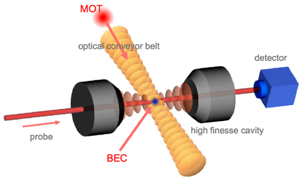
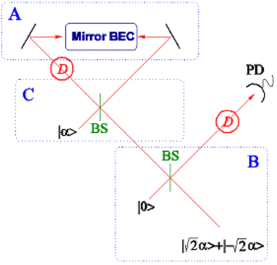

Quantum
Information with a BEC
ÜTo place a BEC in a high-Q microcavity and create BEC-cavity entanglement
ÜTo use a BEC as a Bragg mirror and create BEC-photon entanglement and a Schroedinger cat state



